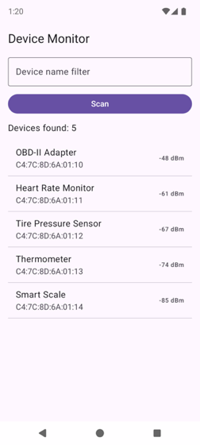
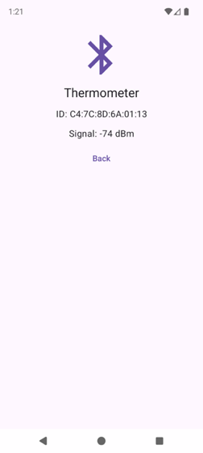
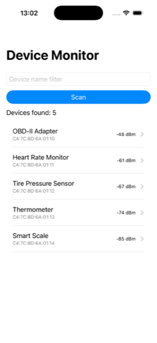
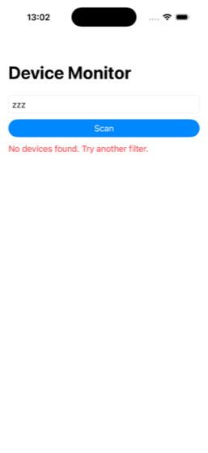

Lesson 04 · Week 1 · Native Device Monitor course
Declarative UI: Components, Lists, Navigation
Primary source Android's Thinking in Compose. It's the clearest statement of the declarative model, and everything in it applies to SwiftUI too. Read it after A2. iOS learners add Apple's State reference page (ten minutes).
Tracks The concepts (A1, A2, A5, B2) and the shared Kotlin (A3) are the same on every track. The screens differ per track. XML Views and UIKit are imperative toolkits. On those tracks you write the declarative discipline by hand, in a single render() function.
Part A — UI as a function of state (~2 h)
A1. Imperative vs declarative, by breaking one
In an imperative toolkit, widgets are objects that hold their own state, and your event handlers mutate them one call at a time: disable the button, show the spinner, set the label. In a declarative toolkit, you describe what the screen should look like for a given state, and the framework works out the changes. Android's docs put it as "conceptually regenerating the entire screen from scratch, then applying only the necessary changes" (Thinking in Compose).
The toy below is the Device Monitor's scan flow written both ways. The handlers on the left are exactly the code underneath it. Click the events in different orders until the two phones disagree.
fun onScanTapped() {
button.isEnabled = false
spinner.show()
status.text = "Scanning…"
list.clear()
}
fun onResults(devices: List<Device>) {
if (devices.isEmpty()) {
status.text = "No devices found."
status.color = RED
return
}
spinner.hide()
button.isEnabled = true
status.text = "Devices found: ${devices.size}"
list.show(devices)
}var isScanning = false
var devices: List<Device>? = null // null = not scanned
fun onScanTapped() { isScanning = true; devices = null }
fun onResults(found: List<Device>) {
isScanning = false; devices = found
}
fun render() = Screen(
buttonEnabled = !isScanning,
spinner = isScanning,
status = when {
isScanning -> "Scanning…"
devices == null -> "Tap Scan to look for devices."
devices.isEmpty() -> "No devices found."
else -> "Devices found: ${devices.size}"
},
statusError = devices?.isEmpty() == true,
rows = devices.orEmpty(),
)Click Tap Scan, then Scan finds nothing. What is wrong on the imperative phone?
The empty branch returns before spinner.hide() and button.isEnabled = true. Every handler must remember every widget, and this one forgot two.
Now click Tap Scan again (the event fires even though the button looks disabled). What colour is "Scanning…" on the imperative phone?
onScanTapped never resets the colour. In the declarative version the colour is computed from state every time, so there is nothing to forget.
Those two bugs are the whole argument. With n widgets and m events, imperative code has n × m places to forget an update. Declarative code has one function from state to screen. Three rules follow, and every track in this course uses them:
- UI is a function of state. The screen shows what the state says, nothing else (Thinking in Compose).
- Single source of truth. Each piece of state lives in exactly one place. Android: "By moving state instead of duplicating it, we're ensuring there's only one source of truth" (State and Jetpack Compose). Apple: "Use state as the single source of truth for a given value type that you store in a view hierarchy" (State).
- Derive, don't store. The status text, the button's enabled flag and the error colour are computed from
isScanninganddevices. Stored copies are how the two phones above drifted apart.
From TypeScriptThis is React's model, or Angular templates with signals: the template is a function of component state, and you change state, never the DOM. Compose and SwiftUI are the same idea with a compiler plugin instead of a virtual DOM. XML Views and UIKit are jQuery-era: you hold references to widgets and set their properties.
A2. Re-running the UI, and where side effects go
When state changes, the framework calls your UI code again. Compose calls it recomposition: "the process of calling your composable functions again when inputs change", and it "skips the rest" whose inputs didn't change. SwiftUI re-evaluates a view's body: "When the value changes, SwiftUI updates the parts of the view hierarchy that depend on the value" (Apple: State).
The consequence you must design for: your UI function runs often, and you don't control when. Composables "might be re-executed as often as every frame", children "might run in any order", and a recomposition "may be skipped" (Thinking in Compose). So the UI function must have no side effects: no starting a scan, no writing a file, no incrementing a counter. Side effects go in one of two places:
| Where | Compose | SwiftUI | XML / UIKit |
|---|---|---|---|
| an event callback (a tap) | onClick = { … }, plus rememberCoroutineScope().launch for async | Button(action:), plus Task { } for async | click listener / UIAction, then call render() |
| a lifecycle-bound effect (on appear) | LaunchedEffect(key) | .task { } / .task(id:) | onViewCreated / viewDidLoad (Lesson 02) |
The scan starts on a tap, so in m01 it lives in a callback. Android's guide says the same: "trigger side-effects from callbacks such as onClick that always execute on the UI thread" (same page).
Imperative tracks: render() is your recompositionXML Views and UIKit never re-run your code for you. So the XML and UIKit screens below keep their state in a few properties and route every change through one render() function that sets every widget from that state. It's the declarative column of the toy, written by hand. When the team's legacy screens misbehave, the cause is usually a handler that skips render() and edits one widget directly.
A3. The data: a fake scan in shared Kotlin
The device list comes from commonMain, so both apps show the same devices and the filtering rule is written once. It replaces Greeting as the shared code the UI calls. (Greeting.kt and Platform*.kt stay; nothing uses them now, and later lessons don't need them.)
shared/src/commonMain/kotlin/com/example/devicemonitor/Device.kt
package com.example.devicemonitor
data class Device(val id: String, val name: String, val rssi: Int)shared/src/commonMain/kotlin/com/example/devicemonitor/SampleDevices.kt
package com.example.devicemonitor
// Stand-in for a real BLE scan until Lesson 08.
object SampleDevices {
val all: List<Device> = listOf(
Device(id = "C4:7C:8D:6A:01:10", name = "OBD-II Adapter", rssi = -48),
Device(id = "C4:7C:8D:6A:01:11", name = "Heart Rate Monitor", rssi = -61),
Device(id = "C4:7C:8D:6A:01:12", name = "Tire Pressure Sensor", rssi = -67),
Device(id = "C4:7C:8D:6A:01:13", name = "Thermometer", rssi = -74),
Device(id = "C4:7C:8D:6A:01:14", name = "Smart Scale", rssi = -85),
)
fun matching(filter: String): List<Device> =
all.filter { it.name.contains(filter.trim(), ignoreCase = true) }
fun find(id: String): Device? = all.firstOrNull { it.id == id }
}Deviceis a data class (Lesson 01), so two devices with the same fields are equal. Itsidis the device's stable identity; you'll hand it to every list in B1. The fake ids look like Android MAC addresses. On iOS, real BLE ids are per-app UUIDs (Lesson 08).object SampleDevicesis a singleton. Swift sees it asSampleDevices.shared(Lesson 03's name table), so Swift callsSampleDevices.shared.matching(filter: query)andSampleDevices.shared.find(id: deviceId). Kotlin parameter names become Swift argument labels.List<Device>arrives in Swift as[Device], andrssi: IntasInt32.- The fake scan has no delay. Waiting is the UI's job in m01. In Lesson 05 the delay moves into shared code as a
Flow, and Lesson 08 replaces the fake with a real scanner.
A4. The list screen: state, events, render
Four pieces of state run the whole screen: the filter text, whether a scan is running, the results (null before the first scan), and, on Compose only, the coroutine scope that runs the scan. Everything the user sees is derived from them.
Compose track · androidApp/src/main/java/com/example/devicemonitor/android/DeviceListScreen.kt
package com.example.devicemonitor.android
import androidx.compose.foundation.clickable
import androidx.compose.foundation.layout.Arrangement
import androidx.compose.foundation.layout.Column
import androidx.compose.foundation.layout.Row
import androidx.compose.foundation.layout.fillMaxSize
import androidx.compose.foundation.layout.fillMaxWidth
import androidx.compose.foundation.layout.padding
import androidx.compose.foundation.layout.size
import androidx.compose.foundation.lazy.LazyColumn
import androidx.compose.foundation.lazy.items
import androidx.compose.material3.Button
import androidx.compose.material3.CircularProgressIndicator
import androidx.compose.material3.HorizontalDivider
import androidx.compose.material3.ListItem
import androidx.compose.material3.MaterialTheme
import androidx.compose.material3.OutlinedTextField
import androidx.compose.material3.Text
import androidx.compose.runtime.Composable
import androidx.compose.runtime.getValue
import androidx.compose.runtime.mutableStateOf
import androidx.compose.runtime.remember
import androidx.compose.runtime.rememberCoroutineScope
import androidx.compose.runtime.saveable.rememberSaveable
import androidx.compose.runtime.setValue
import androidx.compose.ui.Alignment
import androidx.compose.ui.Modifier
import androidx.compose.ui.unit.dp
import com.example.devicemonitor.Device
import com.example.devicemonitor.SampleDevices
import kotlinx.coroutines.delay
import kotlinx.coroutines.launch
// Stateful: owns the screen's state and the scan side effect.
@Composable
fun DeviceListScreen(onDeviceClick: (Device) -> Unit) {
var filter by rememberSaveable { mutableStateOf("") }
var foundIds by rememberSaveable { mutableStateOf<List<String>?>(null) }
var isScanning by remember { mutableStateOf(false) }
val scope = rememberCoroutineScope()
DeviceListContent(
filter = filter,
onFilterChange = { filter = it },
isScanning = isScanning,
devices = foundIds?.mapNotNull { SampleDevices.find(it) },
onScan = {
val query = filter
isScanning = true
foundIds = null
scope.launch {
delay(1_500)
foundIds = SampleDevices.matching(query).map { it.id }
isScanning = false
}
},
onDeviceClick = onDeviceClick,
)
}
// Stateless: renders whatever it's given, reports events up.
@Composable
fun DeviceListContent(
filter: String,
onFilterChange: (String) -> Unit,
isScanning: Boolean,
devices: List<Device>?,
onScan: () -> Unit,
onDeviceClick: (Device) -> Unit,
) {
Column(
modifier = Modifier.fillMaxSize().padding(16.dp),
verticalArrangement = Arrangement.spacedBy(12.dp),
) {
Text("Device Monitor", style = MaterialTheme.typography.headlineSmall)
OutlinedTextField(
value = filter,
onValueChange = onFilterChange,
label = { Text("Device name filter") },
singleLine = true,
modifier = Modifier.fillMaxWidth(),
)
Button(onClick = onScan, enabled = !isScanning, modifier = Modifier.fillMaxWidth()) {
Text("Scan")
}
ScanStatus(isScanning = isScanning, devices = devices)
LazyColumn(modifier = Modifier.weight(1f)) {
items(devices.orEmpty(), key = { it.id }) { device ->
DeviceRow(device = device, onClick = { onDeviceClick(device) })
HorizontalDivider()
}
}
}
}
@Composable
private fun ScanStatus(isScanning: Boolean, devices: List<Device>?) {
Row(
verticalAlignment = Alignment.CenterVertically,
horizontalArrangement = Arrangement.spacedBy(8.dp),
) {
when {
isScanning -> {
CircularProgressIndicator(modifier = Modifier.size(20.dp), strokeWidth = 2.dp)
Text("Scanning…")
}
devices == null -> Text("Tap Scan to look for devices.")
devices.isEmpty() -> Text(
"No devices found. Try another filter.",
color = MaterialTheme.colorScheme.error,
)
else -> Text("Devices found: ${devices.size}")
}
}
}
@Composable
private fun DeviceRow(device: Device, onClick: () -> Unit) {
ListItem(
headlineContent = { Text(device.name) },
supportingContent = { Text(device.id) },
trailingContent = { Text("${device.rssi} dBm") },
modifier = Modifier.clickable(onClick = onClick),
)
}var filter by rememberSaveable { mutableStateOf("") }, read inside out.mutableStateOfcreates an observable value: "Any changes tovalueschedule recomposition of any composable functions that readvalue".rememberkeeps it across recompositions.rememberSaveablealso keeps it "across activity or process recreation", such as rotation (State and Jetpack Compose).byis a Kotlin property delegate, so you writefilterinstead offilter.value.- Why
foundIdsand notdevices?rememberSaveablecan only save types aBundleholds (strings, numbers, Parcelables). A KotlinDevicefrom shared code isn't one of them. So the screen saves the ids, anddevicesis derived on each recomposition withSampleDevices.find. isScanninguses plainrememberon purpose. If the Activity is recreated mid-scan, the scan coroutine is cancelled (next point). A savedtruewould leave the screen saying "Scanning…" forever.rememberCoroutineScope()gives a scope tied to this composable's place on screen. It's cancelled when the composable leaves (navigation, rotation). That's how a callback starts async work in Compose (Side-effects in Compose).onScanis the event handler. It changes state synchronously first (isScanning = true, results cleared), and only then launches the slow part. The button is disabled from the very next frame, so a double tap can't start two scans.val query = filtercaptures the filter at tap time. Readingfilterafter the 1.5 sdelaywould see whatever the user typed meanwhile.- Stateful wrapper, stateless content.
DeviceListScreenowns state.DeviceListContentonly receives values and lambdas: "state goes down … events go up". That's state hoisting and unidirectional data flow (same page). In Lesson 05 a shared ViewModel replaces the wrapper, andDeviceListContentdoesn't change. OutlinedTextField(value = filter, onValueChange = onFilterChange). The field displays only what state says. A keystroke is an event, the event changes state, and the new state recomposes the field. Android now recommends the newerTextFieldStateAPI for text fields (Configure text fields). This lesson uses value + callback because it shows hoisting plainly and matches SwiftUI's binding.Columnstacks children vertically,Arrangement.spacedBy(12.dp)spaces them, andModifier.weight(1f)gives the list all the remaining height. Modifiers are applied in order.enabled = !isScanningon theButtonis the toy'sbuttonEnabled, derived.ScanStatusis the toy'srender(): awhenover state. The error is just one branch with an error colour, and the progress indicator only exists whileisScanningis true.
XML track · androidApp/src/main/res/layout/fragment_device_list.xml
<androidx.constraintlayout.widget.ConstraintLayout xmlns:android="http://schemas.android.com/apk/res/android"
xmlns:app="http://schemas.android.com/apk/res-auto"
android:layout_width="match_parent"
android:layout_height="match_parent"
android:padding="16dp">
<TextView
android:id="@+id/title"
android:layout_width="0dp"
android:layout_height="wrap_content"
android:text="Device Monitor"
android:textAppearance="@style/TextAppearance.AppCompat.Headline"
app:layout_constraintStart_toStartOf="parent"
app:layout_constraintEnd_toEndOf="parent"
app:layout_constraintTop_toTopOf="parent" />
<EditText
android:id="@+id/filterInput"
android:layout_width="0dp"
android:layout_height="wrap_content"
android:layout_marginTop="12dp"
android:hint="Device name filter"
android:importantForAutofill="no"
android:inputType="text"
app:layout_constraintStart_toStartOf="parent"
app:layout_constraintEnd_toEndOf="parent"
app:layout_constraintTop_toBottomOf="@id/title" />
<Button
android:id="@+id/scanButton"
android:layout_width="0dp"
android:layout_height="wrap_content"
android:layout_marginTop="8dp"
android:text="Scan"
app:layout_constraintStart_toStartOf="parent"
app:layout_constraintEnd_toEndOf="parent"
app:layout_constraintTop_toBottomOf="@id/filterInput" />
<ProgressBar
android:id="@+id/progress"
android:layout_width="20dp"
android:layout_height="20dp"
app:layout_constraintStart_toStartOf="parent"
app:layout_constraintTop_toTopOf="@id/statusText"
app:layout_constraintBottom_toBottomOf="@id/statusText" />
<TextView
android:id="@+id/statusText"
android:layout_width="0dp"
android:layout_height="wrap_content"
android:layout_marginStart="8dp"
android:layout_marginTop="12dp"
app:layout_constraintStart_toEndOf="@id/progress"
app:layout_constraintEnd_toEndOf="parent"
app:layout_constraintTop_toBottomOf="@id/scanButton"
app:layout_goneMarginStart="0dp" />
<androidx.recyclerview.widget.RecyclerView
android:id="@+id/deviceList"
android:layout_width="0dp"
android:layout_height="0dp"
android:layout_marginTop="12dp"
app:layoutManager="androidx.recyclerview.widget.LinearLayoutManager"
app:layout_constraintStart_toStartOf="parent"
app:layout_constraintEnd_toEndOf="parent"
app:layout_constraintTop_toBottomOf="@id/statusText"
app:layout_constraintBottom_toBottomOf="parent" />
</androidx.constraintlayout.widget.ConstraintLayout>XML track · androidApp/src/main/java/com/example/devicemonitor/android/DeviceListFragment.kt
package com.example.devicemonitor.android
import android.graphics.Color
import android.os.Bundle
import android.view.LayoutInflater
import android.view.View
import android.view.ViewGroup
import androidx.fragment.app.Fragment
import androidx.lifecycle.lifecycleScope
import androidx.navigation.fragment.findNavController
import androidx.recyclerview.widget.DividerItemDecoration
import com.example.devicemonitor.SampleDevices
import com.example.devicemonitor.android.databinding.FragmentDeviceListBinding
import kotlinx.coroutines.delay
import kotlinx.coroutines.launch
class DeviceListFragment : Fragment() {
// Screen state lives in fields; render() copies it into the views.
private var foundIds: ArrayList<String>? = null
private var isScanning = false
private var binding: FragmentDeviceListBinding? = null
private val adapter = DeviceAdapter { device ->
val nav = findNavController()
// A fast double tap delivers two clicks; only navigate from the list itself.
if (nav.currentDestination?.id == R.id.deviceList) {
nav.navigate(R.id.toDetail, Bundle().apply { putString("deviceId", device.id) })
}
}
override fun onCreate(savedInstanceState: Bundle?) {
super.onCreate(savedInstanceState)
foundIds = savedInstanceState?.getStringArrayList("foundIds")
}
override fun onCreateView(inflater: LayoutInflater, container: ViewGroup?, savedInstanceState: Bundle?): View {
val b = FragmentDeviceListBinding.inflate(inflater, container, false)
binding = b
b.deviceList.adapter = adapter
b.deviceList.addItemDecoration(DividerItemDecoration(requireContext(), DividerItemDecoration.VERTICAL))
b.scanButton.setOnClickListener { scan(b.filterInput.text.toString()) }
render()
return b.root
}
override fun onDestroyView() {
super.onDestroyView()
binding?.deviceList?.adapter = null // the adapter outlives the view; don't let it keep the old list
binding = null
}
override fun onSaveInstanceState(outState: Bundle) {
super.onSaveInstanceState(outState)
outState.putStringArrayList("foundIds", foundIds)
}
private fun scan(query: String) {
isScanning = true
foundIds = null
render()
lifecycleScope.launch {
delay(1_500)
foundIds = ArrayList(SampleDevices.matching(query).map { it.id })
isScanning = false
render()
}
}
// The one place that touches views: every state change ends here.
private fun render() {
val b = binding ?: return
val devices = foundIds?.mapNotNull { SampleDevices.find(it) }
b.scanButton.isEnabled = !isScanning
b.progress.visibility = if (isScanning) View.VISIBLE else View.GONE
b.statusText.text = when {
isScanning -> "Scanning…"
devices == null -> "Tap Scan to look for devices."
devices.isEmpty() -> "No devices found. Try another filter."
else -> "Devices found: ${devices.size}"
}
b.statusText.setTextColor(if (devices?.isEmpty() == true) Color.RED else Color.DKGRAY)
adapter.submitList(devices.orEmpty())
}
}- ConstraintLayout. Each view pins its edges to the parent or to a sibling (
layout_constraintTop_toBottomOf="@id/filterInput").layout_width="0dp"means "match constraints": stretch between the two horizontal anchors. The RecyclerView's0dpheight stretches from the status line to the bottom. The status text sits 8dp after the progress bar (layout_marginStart). When the bar isGONE,layout_goneMarginStart="0dp"replaces that margin, so the text lines up with the field above it. - State is two fields:
foundIdsandisScanning. The views are a copy of it, andrender()is the only function that writes to views. That's the declarative column of the A1 toy, by hand. - ViewBinding.
FragmentDeviceListBindingis generated from the layout file name (buildFeatures { viewBinding = true }, B3), with one typed field per view id. NofindViewById, no casts. bindingis nullable. A Fragment outlives its views: when you navigate to the detail screen, the Fragment stays on the back stack butonDestroyViewruns.render()returns early when there is no view. When you come back,onCreateViewbuilds fresh views and callsrender(), so they show the current state.onSaveInstanceState+getStringArrayListisrememberSaveableby hand: the results survive rotation as a list of ids. TheEditTextsaves its own text, because it has an id.scan()sets state and renders synchronously, then launches the slow part in the Fragment'slifecycleScope. That scope lives as long as the Fragment, not its views. So a scan started before you open the detail screen finishes while you're there, and its results show when you return. Rotation destroys the Fragment and cancels the scan (A5).queryis captured at tap time, before the delay.- The adapter's click handler checks
currentDestinationbefore navigating. A fast double tap delivers two clicks, and the second would callnavigate(R.id.toDetail)from the detail screen, where that action doesn't exist: the app crashes (B4). adapter = nullinonDestroyView. The adapter is a Fragment field. When a RecyclerView is given an adapter, it registers itself as the adapter's observer. Without this line, the Fragment on the back stack would keep the destroyed list alive through the adapter.
XML vs Compose · what changed and whySame state, same rules, different enforcement. Compose re-runs DeviceListContent whenever state changes, so a forgotten update can't happen. In XML, nothing stops a click listener from setting statusText directly and skipping render(). The rememberSaveable line is three methods in XML (onCreate, onSaveInstanceState, the field). The Fragment also needs the nullable-binding dance, because its views die before it does.
SwiftUI track · iosApp/iosApp/DeviceListView.swift
import SwiftUI
import Shared
struct DeviceListView: View {
@State private var filter = ""
@State private var devices: [Device]? = nil
@State private var isScanning = false
var body: some View {
VStack(alignment: .leading, spacing: 12) {
TextField("Device name filter", text: $filter)
.textFieldStyle(.roundedBorder)
.autocorrectionDisabled()
Button(action: scan) {
Text("Scan")
.frame(maxWidth: .infinity)
}
.buttonStyle(.borderedProminent)
.disabled(isScanning)
ScanStatus(isScanning: isScanning, devices: devices)
List(devices ?? [], id: \.id) { device in
NavigationLink(value: DeviceRoute(id: device.id)) {
DeviceRow(device: device)
}
}
.listStyle(.plain)
}
.padding()
.navigationTitle("Device Monitor")
}
private func scan() {
let query = filter
isScanning = true
devices = nil
Task {
try? await Task.sleep(for: .seconds(1.5))
devices = SampleDevices.shared.matching(filter: query)
isScanning = false
}
}
}
private struct ScanStatus: View {
let isScanning: Bool
let devices: [Device]?
var body: some View {
if isScanning {
HStack {
ProgressView()
Text("Scanning…")
}
} else if let devices {
if devices.isEmpty {
Text("No devices found. Try another filter.")
.foregroundStyle(.red)
} else {
Text("Devices found: \(devices.count)")
}
} else {
Text("Tap Scan to look for devices.")
}
}
}
private struct DeviceRow: View {
let device: Device
var body: some View {
HStack {
VStack(alignment: .leading) {
Text(device.name)
Text(device.id)
.font(.caption)
.foregroundStyle(.secondary)
}
Spacer()
Text("\(device.rssi) dBm")
.font(.caption)
}
}
}@State private var: "SwiftUI manages the property's storage. When the value changes, SwiftUI updates the parts of the view hierarchy that depend on the value" (Apple: State). Thestructitself is recreated all the time; the state isn't. Apple says to declare itprivate"in the highest view in the view hierarchy that needs access".TextField(…, text: $filter).$filteris a Binding, a read-write reference to the state. The field showsfilterand writes keystrokes back into it. It's Compose'svalue+onValueChangein one argument.Button(action: scan) { Text("Scan").frame(maxWidth: .infinity) }. The frame sits on the label. Put.frame(maxWidth: .infinity)on theButtoninstead, and you get a small centred button in a wide invisible frame (see the B4 gotcha)..disabled(isScanning)is derived, like Compose'senabled = !isScanning.scan()changes state synchronously, then starts aTaskfor the wait. AViewis@MainActor, so theTaskinherits the main actor, and the writes afterawaithappen on the main thread (B2). It's an unstructured task (Lesson 01): leaving the screen doesn't cancel it. That's harmless here, because the list is the root screen. Lesson 05 moves the scan into a ViewModel that owns its lifetime.let query = filtercaptures the filter at tap time.ScanStatusis the toy'srender(), anif/elseover state.devices: [Device]?usesnilfor "never scanned", so the screen can tell "never scanned" from "scanned, found nothing".VStack(alignment: .leading, spacing: 12)stacks children vertically..padding()uses the system default inset. TheListtakes the remaining height on its own.
UIKit track · iosApp/iosApp/DeviceListViewController.swift
import UIKit
import Shared
final class DeviceListViewController: UIViewController, UITableViewDelegate {
// Screen state lives in properties; render() copies it into the views.
private var devices: [Device]? = nil
private var isScanning = false
private let filterField = UITextField()
private let scanButton = UIButton(configuration: .filled())
private let spinner = UIActivityIndicatorView(style: .medium)
private let statusLabel = UILabel()
private let tableView = UITableView()
private lazy var dataSource = UITableViewDiffableDataSource<Int, String>(tableView: tableView) {
tableView, indexPath, deviceId in
let cell = tableView.dequeueReusableCell(withIdentifier: "device", for: indexPath)
var content = UIListContentConfiguration.subtitleCell()
if let device = SampleDevices.shared.find(id: deviceId) {
content.text = device.name
content.secondaryText = "\(device.id) \(device.rssi) dBm"
}
cell.contentConfiguration = content
cell.accessoryType = .disclosureIndicator
return cell
}
override func viewDidLoad() {
super.viewDidLoad()
title = "Device Monitor"
navigationController?.navigationBar.prefersLargeTitles = true
view.backgroundColor = .systemBackground
filterField.placeholder = "Device name filter"
filterField.borderStyle = .roundedRect
filterField.autocorrectionType = .no
scanButton.configuration?.title = "Scan"
scanButton.addAction(UIAction { [weak self] _ in self?.scan() }, for: .touchUpInside)
statusLabel.numberOfLines = 0
tableView.register(UITableViewCell.self, forCellReuseIdentifier: "device")
tableView.delegate = self
let statusRow = UIStackView(arrangedSubviews: [spinner, statusLabel])
statusRow.spacing = 8
let stack = UIStackView(arrangedSubviews: [filterField, scanButton, statusRow, tableView])
stack.axis = .vertical
stack.spacing = 12
stack.translatesAutoresizingMaskIntoConstraints = false
view.addSubview(stack)
NSLayoutConstraint.activate([
stack.topAnchor.constraint(equalTo: view.layoutMarginsGuide.topAnchor),
stack.leadingAnchor.constraint(equalTo: view.layoutMarginsGuide.leadingAnchor),
stack.trailingAnchor.constraint(equalTo: view.layoutMarginsGuide.trailingAnchor),
stack.bottomAnchor.constraint(equalTo: view.bottomAnchor),
])
render()
}
private func scan() {
let query = filterField.text ?? ""
isScanning = true
devices = nil
render()
Task {
try? await Task.sleep(for: .seconds(1.5))
devices = SampleDevices.shared.matching(filter: query)
isScanning = false
render()
}
}
// The one place that touches views: every state change ends here.
private func render() {
scanButton.isEnabled = !isScanning
if isScanning { spinner.startAnimating() } else { spinner.stopAnimating() }
spinner.isHidden = !isScanning
if isScanning {
statusLabel.text = "Scanning…"
} else if let devices {
statusLabel.text = devices.isEmpty
? "No devices found. Try another filter."
: "Devices found: \(devices.count)"
} else {
statusLabel.text = "Tap Scan to look for devices."
}
statusLabel.textColor = devices?.isEmpty == true ? .systemRed : .label
var snapshot = NSDiffableDataSourceSnapshot<Int, String>()
snapshot.appendSections([0])
snapshot.appendItems((devices ?? []).map(\.id))
dataSource.apply(snapshot, animatingDifferences: true)
}
func tableView(_ tableView: UITableView, didSelectRowAt indexPath: IndexPath) {
tableView.deselectRow(at: indexPath, animated: true)
guard let deviceId = dataSource.itemIdentifier(for: indexPath) else { return }
navigationController?.pushViewController(DeviceDetailViewController(deviceId: deviceId), animated: true)
}
}- State is two properties,
devicesandisScanning. The widgets are a copy, and onlyrender()writes to them: the declarative discipline by hand. (The filter text lives in theUITextFielditself, andscan()reads it once.) - Layout: one vertical
UIStackViewholds the field, button, status row and table.UIStackViewarranges its arranged subviews for you, so only the stack itself needs constraints. It's pinned to the layout margins (which include the safe area) on three sides and to the bottom of the view, and the table takes the leftover height. translatesAutoresizingMaskIntoConstraints = falseon the stack. Without it, UIKit adds constraints of its own that conflict with yours (Lesson 03's label did the same).UIButton(configuration: .filled())is the modern button API.UIAction { [weak self] _ in self?.scan() }avoids a retain cycle: the view controller owns the button, so the button's closure must not own the view controller.scan()changes state and renders synchronously, then starts aTask.UIViewControlleris@MainActor, so the task's code runs on the main thread afterawaittoo (B2).render()sets every widget from state, every time. The table's contents are set the same way, from a snapshot (B1).- The large title comes from the navigation controller (B3):
titleplusprefersLargeTitles.
UIKit vs SwiftUI · what changed and whySwiftUI's @State plus a body that reads it replaces UIKit's properties, render(), and all the view setup in viewDidLoad. The scan function is nearly identical on both. One real difference: in SwiftUI the filter is state (bound to the field), while in UIKit the text field owns it and you read it when you need it.
A5. What survives what
"Local state" means state owned by the screen, so it dies when the screen does. We ran the m01 builds and checked each case:
| After… | Compose | XML | SwiftUI / UIKit |
|---|---|---|---|
| opening a device and coming back | filter + results kept (rememberSaveable). With plain remember, the results were lost: the list screen leaves composition while the detail is shown. | kept: the Fragment stays on the back stack, and only its views are rebuilt | kept: the list stays alive underneath the pushed screen |
| rotating, results on screen | kept (saved state) | kept (saved state) | kept: iOS doesn't recreate screens on rotation (Lesson 02) |
| rotating during a scan | the scan is silently cancelled and the screen returns to "Tap Scan to look for devices." | the scan completes | |
Retrieval check: Part A
The status line says "Devices found: 3". Where should that string live?
It's derived state. A stored copy is a second source of truth that can go stale, like the toy's red "Scanning…".
Why must a composable or a SwiftUI body never start a scan directly?
Recomposition / re-evaluation is frequent and can be skipped. Side effects go in callbacks or lifecycle-bound effects (LaunchedEffect, .task).
Compose: which of these does rememberSaveable keep across rotation?
Saved state goes through a Bundle: primitives, strings, Parcelables. Coroutines are cancelled, and Device isn't Bundle-able.
In the XML and UIKit screens, a new button should clear the results. What does its handler do?
Change state, then render. Editing widgets directly is exactly how the imperative phone got stuck.
- Fix the toy on paper. Rewrite the imperative
onResultsso it can't leave the spinner running. Then add a third event, "Bluetooth turned off", to both columns. Count the lines each version needed. Which one forced you to think about every widget? - Find the state of the detail screen. Before reading Part B, write down what state the detail screen needs. (Hint: compare it with what it displays.) Check your answer in B3.
Part B — Lists, threads, a second screen (~2.5 h)
B1. Lists need stable keys
A list widget reuses row views and animates insertions, moves and removals. To do that, it must know which row is which across updates, and position isn't enough. By default Compose keys each item "against the position of the item", so "items which change position effectively lose any remembered state". Giving each item "a stable and unique key" fixes it (Lists and grids). Every track uses the device's id:
| Track | Where the key goes |
|---|---|
| Compose | items(devices, key = { it.id }) in the LazyColumn |
| XML | DiffUtil.ItemCallback.areItemsTheSame compares ids; areContentsTheSame compares all fields |
| SwiftUI | List(devices, id: \.id); a type conforming to Identifiable doesn't need id: (Apple: List) |
| UIKit | the diffable data source's item identifiers are the ids |
Never use an array index as a key. Indexes change on every insert, filter or sort. Compose adds one constraint: the key must be a type a Bundle can hold, because rememberSaveable inside rows is restored by key. A String id qualifies.
The Compose list is already in A4: LazyColumn with items(devices.orEmpty(), key = { it.id }). Lazy lists compose only the rows on screen. ListItem is Material 3's row with headline, supporting and trailing slots, and Modifier.clickable turns the whole row into a tap target.
XML track · androidApp/src/main/res/layout/item_device.xml
<androidx.constraintlayout.widget.ConstraintLayout xmlns:android="http://schemas.android.com/apk/res/android"
xmlns:app="http://schemas.android.com/apk/res-auto"
android:layout_width="match_parent"
android:layout_height="wrap_content"
android:background="?attr/selectableItemBackground"
android:paddingVertical="12dp">
<TextView
android:id="@+id/deviceName"
android:layout_width="0dp"
android:layout_height="wrap_content"
android:textAppearance="@style/TextAppearance.AppCompat.Medium"
app:layout_constraintStart_toStartOf="parent"
app:layout_constraintEnd_toStartOf="@id/deviceRssi"
app:layout_constraintTop_toTopOf="parent" />
<TextView
android:id="@+id/deviceId"
android:layout_width="0dp"
android:layout_height="wrap_content"
android:textAppearance="@style/TextAppearance.AppCompat.Small"
app:layout_constraintStart_toStartOf="parent"
app:layout_constraintEnd_toStartOf="@id/deviceRssi"
app:layout_constraintTop_toBottomOf="@id/deviceName" />
<TextView
android:id="@+id/deviceRssi"
android:layout_width="wrap_content"
android:layout_height="wrap_content"
android:textAppearance="@style/TextAppearance.AppCompat.Small"
app:layout_constraintEnd_toEndOf="parent"
app:layout_constraintTop_toTopOf="parent"
app:layout_constraintBottom_toBottomOf="parent" />
</androidx.constraintlayout.widget.ConstraintLayout>XML track · androidApp/src/main/java/com/example/devicemonitor/android/DeviceAdapter.kt
package com.example.devicemonitor.android
import android.view.LayoutInflater
import android.view.ViewGroup
import androidx.recyclerview.widget.DiffUtil
import androidx.recyclerview.widget.ListAdapter
import androidx.recyclerview.widget.RecyclerView
import com.example.devicemonitor.Device
import com.example.devicemonitor.android.databinding.ItemDeviceBinding
class DeviceAdapter(
private val onClick: (Device) -> Unit,
) : ListAdapter<Device, DeviceAdapter.Holder>(DeviceDiff) {
class Holder(val binding: ItemDeviceBinding) : RecyclerView.ViewHolder(binding.root)
override fun onCreateViewHolder(parent: ViewGroup, viewType: Int): Holder =
Holder(ItemDeviceBinding.inflate(LayoutInflater.from(parent.context), parent, false))
override fun onBindViewHolder(holder: Holder, position: Int) {
val device = getItem(position)
holder.binding.deviceName.text = device.name
holder.binding.deviceId.text = device.id
holder.binding.deviceRssi.text = "${device.rssi} dBm"
holder.itemView.setOnClickListener { onClick(device) }
}
}
private object DeviceDiff : DiffUtil.ItemCallback<Device>() {
override fun areItemsTheSame(oldItem: Device, newItem: Device) = oldItem.id == newItem.id
override fun areContentsTheSame(oldItem: Device, newItem: Device) = oldItem == newItem
}ListAdapteris RecyclerView's diffing adapter. You callsubmitList(newList)(inrender()), it diffs against the old list on a background thread, and dispatches precise insert/move/remove updates. You never callnotifyDataSetChanged().DeviceDiffanswers two questions: same item (same id)? Same contents (data-class equality)? The first is the key. The second decides whether a row needs re-binding.- ViewHolder holds one row's binding.
onCreateViewHolderinflates a row (rarely: rows are recycled).onBindViewHolderfills a recycled row with the device at that position, every time a row scrolls into view. - The list's
LinearLayoutManageris set in the layout XML (app:layoutManager). A RecyclerView without a layout manager shows nothing. The row dividers come from theDividerItemDecorationadded inonCreateView; RecyclerView draws none by default.
The SwiftUI list is in A4: List(devices ?? [], id: \.id). Kotlin classes can't conform to Swift's Identifiable by themselves, so pass the key path explicitly. Each row is a NavigationLink (B3), which adds the disclosure chevron.
The UIKit list is the dataSource property in A4:
UITableViewDiffableDataSource<Int, String>: section identifiers areInts (one section,0), and item identifiers are device idStrings, so the key is the item. The closure builds a cell for an id (Apple: UITableViewDiffableDataSource).- In
render(), you build a freshNSDiffableDataSourceSnapshotfrom state andapplyit. UIKit diffs the snapshots and animates the changes. That's the declarative idea inside an imperative toolkit. UIListContentConfiguration.subtitleCell()is the standard two-line cell.dequeueReusableCellrecycles cells, like RecyclerView's ViewHolders.lazy var: the data source needstableView, so it's created on first use, after the properties exist.
B2. Async updates and the main-thread rule
Every UI toolkit here is single-threaded. Android's two rules are "Don't block the UI thread" and "Don't access the Android UI toolkit from outside the UI thread", because "the Android UI toolkit is not thread-safe" (Processes and threads). On iOS, UIViewController and SwiftUI's View are @MainActor, and the Swift 6 compiler checks it (Lesson 01). The m01 scan follows both rules: delay and Task.sleep suspend without blocking a thread, and the state updates after them run on the main thread.
To see what each toolkit does when you break the second rule, we moved the post-scan update onto a background thread on each track:
| Track | What we changed | What happened |
|---|---|---|
| Compose | withContext(Dispatchers.Default) { foundIds = … } | No crash. The list updated (the write ran on DefaultDispatcher-worker-1). Compose state tolerates it, but don't build on that: Lesson 05 publishes UI state from a ViewModel on the main thread. |
| XML | withContext(Dispatchers.Default) { render() } | Crash: CalledFromWrongThreadException: Only the original thread that created a view hierarchy can touch its views. Expected: main Calling: DefaultDispatcher-worker-1 |
| SwiftUI | Task.detached { devices = … } | Compiler warning (Swift 6 mode): main actor-isolated property 'devices' can not be mutated from a nonisolated context. Apple documents @State as safe to mutate from any thread, so it's a warning rather than an error. This course treats warnings as errors. |
| UIKit | Task.detached { self.render() } | Compiler error: main actor-isolated instance method 'render()' cannot be called from outside of the actor |
The rule to carry forward: do slow work off the main thread, and publish UI state on it. In Lesson 08, BLE callbacks arrive on a Binder thread (Android) or a CoreBluetooth queue (iOS), and the adapter's job is to get them back to the main thread before the UI sees them.
B3. A second screen: navigation as a back stack
Every navigation system here is a back stack: the root screen at the bottom, pushed screens on top, Back pops one. Two ideas carry across tracks:
- A route is a value. You navigate by pushing a small value that describes the destination (
DeviceDetail(id),DeviceRoute(id:), aBundlewithdeviceId), and the system maps it to a screen. - Pass the id, not the object. Android must be able to save the route (process death, rotation), so routes hold small saveable values. The detail screen then looks the device up from the single source of truth (
SampleDevices.find). That's the answer to Part A's exercise: the detail screen's only state isdeviceId, and everything it displays is derived from it.
Compose track · build.gradle.kts (root): one plugin added
plugins {
id("com.android.application") version "9.4.1" apply false
id("com.android.kotlin.multiplatform.library") version "9.4.1" apply false
id("org.jetbrains.kotlin.multiplatform") version "2.4.21" apply false
id("org.jetbrains.kotlin.plugin.compose") version "2.4.21" apply false
id("org.jetbrains.kotlin.plugin.serialization") version "2.4.21" apply false
}Compose track · androidApp/build.gradle.kts
plugins {
id("com.android.application")
id("org.jetbrains.kotlin.plugin.compose")
id("org.jetbrains.kotlin.plugin.serialization")
}
android {
namespace = "com.example.devicemonitor.android"
compileSdk = 37
defaultConfig {
applicationId = "com.example.devicemonitor"
minSdk = 26
targetSdk = 36
versionCode = 1
versionName = "1.0"
}
buildFeatures { compose = true }
}
dependencies {
implementation(project(":shared"))
implementation(platform("androidx.compose:compose-bom:2026.09.00"))
implementation("androidx.core:core-ktx:1.19.1")
implementation("androidx.activity:activity-compose:1.13.0")
implementation("androidx.compose.material3:material3")
implementation("androidx.navigation:navigation-compose:2.10.2")
implementation("androidx.lifecycle:lifecycle-runtime-compose:2.11.0")
implementation("org.jetbrains.kotlinx:kotlinx-serialization-core:1.12.0")
}Compose track · androidApp/src/main/java/com/example/devicemonitor/android/DeviceMonitorApp.kt
package com.example.devicemonitor.android
import androidx.compose.foundation.layout.padding
import androidx.compose.material3.Scaffold
import androidx.compose.runtime.Composable
import androidx.compose.ui.Modifier
import androidx.navigation.compose.NavHost
import androidx.navigation.compose.composable
import androidx.navigation.compose.rememberNavController
import androidx.navigation.toRoute
import kotlinx.serialization.Serializable
@Serializable
data object DeviceList
@Serializable
data class DeviceDetail(val id: String)
@Composable
fun DeviceMonitorApp() {
val navController = rememberNavController()
Scaffold { innerPadding ->
NavHost(
navController = navController,
startDestination = DeviceList,
modifier = Modifier.padding(innerPadding),
) {
composable<DeviceList> {
DeviceListScreen(
onDeviceClick = { device -> navController.navigate(DeviceDetail(device.id)) },
)
}
composable<DeviceDetail> { entry ->
val route: DeviceDetail = entry.toRoute()
DeviceDetailScreen(
deviceId = route.id,
onBack = { navController.popBackStack() },
)
}
}
}
}Compose track · androidApp/src/main/java/com/example/devicemonitor/android/DeviceDetailScreen.kt
package com.example.devicemonitor.android
import androidx.compose.foundation.Image
import androidx.compose.foundation.layout.Arrangement
import androidx.compose.foundation.layout.Column
import androidx.compose.foundation.layout.fillMaxSize
import androidx.compose.foundation.layout.padding
import androidx.compose.foundation.layout.size
import androidx.compose.material3.MaterialTheme
import androidx.compose.material3.Text
import androidx.compose.material3.TextButton
import androidx.compose.runtime.Composable
import androidx.compose.ui.Alignment
import androidx.compose.ui.Modifier
import androidx.compose.ui.graphics.ColorFilter
import androidx.compose.ui.res.painterResource
import androidx.compose.ui.unit.dp
import androidx.lifecycle.compose.dropUnlessResumed
import com.example.devicemonitor.SampleDevices
@Composable
fun DeviceDetailScreen(deviceId: String, onBack: () -> Unit) {
val device = SampleDevices.find(deviceId)
Column(
modifier = Modifier.fillMaxSize().padding(16.dp),
horizontalAlignment = Alignment.CenterHorizontally,
verticalArrangement = Arrangement.spacedBy(12.dp),
) {
Image(
painter = painterResource(R.drawable.ic_bluetooth),
contentDescription = null,
colorFilter = ColorFilter.tint(MaterialTheme.colorScheme.primary),
modifier = Modifier.size(96.dp),
)
if (device == null) {
Text("Unknown device", color = MaterialTheme.colorScheme.error)
} else {
Text(device.name, style = MaterialTheme.typography.headlineSmall)
Text("ID: ${device.id}")
Text("Signal: ${device.rssi} dBm")
}
TextButton(onClick = dropUnlessResumed { onBack() }) {
Text("Back")
}
}
}Compose track · androidApp/src/main/java/com/example/devicemonitor/android/MainActivity.kt
package com.example.devicemonitor.android
import android.os.Bundle
import androidx.activity.ComponentActivity
import androidx.activity.compose.setContent
import androidx.activity.enableEdgeToEdge
import androidx.compose.material3.MaterialTheme
class MainActivity : ComponentActivity() {
override fun onCreate(savedInstanceState: Bundle?) {
enableEdgeToEdge()
super.onCreate(savedInstanceState)
setContent {
MaterialTheme {
DeviceMonitorApp()
}
}
}
}- Routes are
@Serializabletypes: an object for a screen without arguments, a data class for one with arguments. That needs the Kotlin serialization plugin (same version as Kotlin) andkotlinx-serialization-core(Navigation setup, type safety). We declare the serialization library ourselves because our code uses@Serializabledirectly. (kotlinx.coroutines, used fordelayandlaunch, arrives transitively with the Compose runtime. Lesson 05 declares it explicitly, when shared code starts using it.) NavHost(navController, startDestination = DeviceList)is the back stack's container.composable<DeviceDetail> { entry -> … }maps a route type to a screen, andentry.toRoute()gives back the typed route with itsid.navController.navigate(DeviceDetail(device.id))pushes. The list screen doesn't know about the NavController: it only reportsonDeviceClick(events up). The app composable decides what a click means.ScaffoldsuppliesinnerPaddingfor the system bars, andModifier.padding(innerPadding)keeps both screens out from under them (Lesson 03's edge-to-edge).dropUnlessResumed { onBack() }ignores the tap unless the screen is fully resumed. Without it, a fast double tap on Back popped twice and left a blank screen (B4). System Back (gesture or button) is handled byNavHostitself.Image(painterResource(R.drawable.ic_bluetooth))draws a vector drawable fromres/drawable/(file below, shared by both Android tracks), tinted with the theme colour.contentDescription = nullmarks it decorative for screen readers.- The detail screen has no state of its own: it derives everything from
deviceId. If the id is unknown, it shows an error instead of crashing. MaterialTheme { … }inMainActivitygives every Material component the default colours and type. Lesson 03's greeting didn't need it. TheButtonandListItemdo.
NavigationStack(path:) model (Navigation 3). Google's main navigation guide still says "If your app is built entirely with Jetpack Compose, use Navigation Compose" (Navigation), so this course uses Navigation Compose. The concepts (routes as values, ids not objects, one back stack) carry over unchanged.
XML track · androidApp/build.gradle.kts
plugins {
id("com.android.application")
}
android {
namespace = "com.example.devicemonitor.android"
compileSdk = 37
defaultConfig {
applicationId = "com.example.devicemonitor"
minSdk = 26
targetSdk = 36
versionCode = 1
versionName = "1.0"
}
buildFeatures { viewBinding = true }
}
dependencies {
implementation(project(":shared"))
implementation("androidx.core:core-ktx:1.19.1")
implementation("androidx.appcompat:appcompat:1.8.0")
implementation("androidx.fragment:fragment-ktx:1.9.1")
implementation("androidx.constraintlayout:constraintlayout:2.2.2")
implementation("androidx.recyclerview:recyclerview:1.4.0")
implementation("androidx.navigation:navigation-fragment:2.10.2")
implementation("androidx.lifecycle:lifecycle-runtime-ktx:2.11.0")
}XML track · androidApp/src/main/res/layout/activity_main.xml
<FrameLayout xmlns:android="http://schemas.android.com/apk/res/android"
xmlns:app="http://schemas.android.com/apk/res-auto"
android:layout_width="match_parent"
android:layout_height="match_parent"
android:fitsSystemWindows="true">
<androidx.fragment.app.FragmentContainerView
android:id="@+id/navHost"
android:name="androidx.navigation.fragment.NavHostFragment"
android:layout_width="match_parent"
android:layout_height="match_parent"
app:defaultNavHost="true"
app:navGraph="@navigation/nav_graph" />
</FrameLayout>XML track · androidApp/src/main/res/navigation/nav_graph.xml
<navigation xmlns:android="http://schemas.android.com/apk/res/android"
xmlns:app="http://schemas.android.com/apk/res-auto"
android:id="@+id/nav_graph"
app:startDestination="@id/deviceList">
<fragment
android:id="@+id/deviceList"
android:name="com.example.devicemonitor.android.DeviceListFragment">
<action
android:id="@+id/toDetail"
app:destination="@id/deviceDetail" />
</fragment>
<fragment
android:id="@+id/deviceDetail"
android:name="com.example.devicemonitor.android.DeviceDetailFragment">
<argument
android:name="deviceId"
app:argType="string" />
</fragment>
</navigation>XML track · androidApp/src/main/java/com/example/devicemonitor/android/MainActivity.kt
package com.example.devicemonitor.android
import android.os.Bundle
import androidx.activity.enableEdgeToEdge
import androidx.appcompat.app.AppCompatActivity
class MainActivity : AppCompatActivity() {
override fun onCreate(savedInstanceState: Bundle?) {
enableEdgeToEdge()
super.onCreate(savedInstanceState)
setContentView(R.layout.activity_main)
}
}XML track · androidApp/src/main/res/layout/fragment_device_detail.xml
<LinearLayout xmlns:android="http://schemas.android.com/apk/res/android"
xmlns:app="http://schemas.android.com/apk/res-auto"
android:layout_width="match_parent"
android:layout_height="match_parent"
android:gravity="center_horizontal"
android:orientation="vertical"
android:padding="16dp">
<ImageView
android:id="@+id/deviceIcon"
android:layout_width="96dp"
android:layout_height="96dp"
android:contentDescription="@null"
android:src="@drawable/ic_bluetooth"
app:tint="?attr/colorAccent" />
<TextView
android:id="@+id/deviceName"
android:layout_width="wrap_content"
android:layout_height="wrap_content"
android:layout_marginTop="12dp"
android:textAppearance="@style/TextAppearance.AppCompat.Headline" />
<TextView
android:id="@+id/deviceId"
android:layout_width="wrap_content"
android:layout_height="wrap_content"
android:layout_marginTop="12dp" />
<TextView
android:id="@+id/deviceRssi"
android:layout_width="wrap_content"
android:layout_height="wrap_content"
android:layout_marginTop="12dp" />
<Button
android:id="@+id/backButton"
style="@style/Widget.AppCompat.Button.Borderless.Colored"
android:layout_width="wrap_content"
android:layout_height="wrap_content"
android:layout_marginTop="12dp"
android:text="Back" />
</LinearLayout>XML track · androidApp/src/main/java/com/example/devicemonitor/android/DeviceDetailFragment.kt
package com.example.devicemonitor.android
import android.os.Bundle
import android.view.LayoutInflater
import android.view.View
import android.view.ViewGroup
import androidx.fragment.app.Fragment
import androidx.navigation.fragment.findNavController
import com.example.devicemonitor.SampleDevices
import com.example.devicemonitor.android.databinding.FragmentDeviceDetailBinding
class DeviceDetailFragment : Fragment() {
override fun onCreateView(inflater: LayoutInflater, container: ViewGroup?, savedInstanceState: Bundle?): View {
val b = FragmentDeviceDetailBinding.inflate(inflater, container, false)
val deviceId = requireArguments().getString("deviceId").orEmpty()
val device = SampleDevices.find(deviceId)
if (device == null) {
b.deviceName.text = "Unknown device"
} else {
b.deviceName.text = device.name
b.deviceId.text = "ID: ${device.id}"
b.deviceRssi.text = "Signal: ${device.rssi} dBm"
}
b.backButton.setOnClickListener {
val nav = findNavController()
// A fast double tap would otherwise pop the list too and empty the back stack.
if (nav.currentDestination?.id == R.id.deviceDetail) nav.popBackStack()
}
return b.root
}
}- One Activity, many Fragments.
MainActivitynow only sets a layout holding aFragmentContainerViewwhose class isNavHostFragment. The NavHostFragment readsnav_graph.xmland swaps Fragments in and out.defaultNavHost="true"lets it handle the system Back button. - The nav graph lists destinations (each a Fragment class), the
startDestination, anaction(toDetail) and the detail's typedargument. If you've seen this file in the team's app: only the start destination appears on launch, and every other screen is reached bynavigate(). navigate(R.id.toDetail, Bundle().apply { putString("deviceId", device.id) })pushes, passing the id in aBundle.requireArguments().getString("deviceId")reads it on the other side. The shorterbundleOf("deviceId" to device.id)is deprecated in core-ktx 1.19.1 ("does not provide type safety at compile time") and gives a compiler warning. The Safe Args Gradle plugin generates typed wrappers for arguments; it isn't needed for one.- The
FrameLayoutwrapper withfitsSystemWindows="true"pads everything clear of the system bars. PuttingfitsSystemWindowson theFragmentContainerViewitself did nothing in our build: the list drew under the status bar (B4). app:tint="?attr/colorAccent"tints the vector icon with the theme's accent colour, through AppCompat'sapp:attribute. Withandroid:tint="?attr/colorPrimary"the icon came out almost invisible on the AppCompat light theme.- The detail Fragment has no state of its own: it reads its argument and fills its views once. A Fragment's argument
Bundleis saved and restored for you, so rotation needs no extra code here. - Back is guarded too: it pops only while the detail is the current destination. Without the check, two fast taps popped the detail and the list's back-stack entry (B4).
kotlinx.coroutines(delay,launch) arrives transitively throughlifecycle-runtime-ktx. Lesson 05 declares it explicitly, when shared code starts using it.
Both Android tracks · androidApp/src/main/res/drawable/ic_bluetooth.xml
<vector xmlns:android="http://schemas.android.com/apk/res/android"
android:width="24dp"
android:height="24dp"
android:viewportWidth="24"
android:viewportHeight="24">
<path
android:fillColor="#FF000000"
android:pathData="M17.71,7.71L12,2h-1v7.59L6.41,5 5,6.41 10.59,12 5,17.59 6.41,19 11,14.41V22h1l5.71,-5.71 -4.3,-4.29 4.3,-4.29zM13,5.83l1.88,1.88L13,9.59V5.83zM14.88,16.29L13,18.17v-3.76l1.88,1.88z" />
</vector>That's Material Design's "bluetooth" icon path as an Android vector drawable. The manifest stays as it was in m00.
XML vs Compose · what changed and whyNavigation Compose keeps the graph in Kotlin (composable<Route>), with typed routes checked by the compiler. The Fragment version keeps it in XML, with string-keyed Bundle arguments checked at runtime. Both keep a back stack inside one Activity. The Fragment version's extra layer (Fragment lifecycle plus view lifecycle) is why binding is nullable there and why the adapter needs clearing.
SwiftUI track · iosApp/iosApp/ContentView.swift
import SwiftUI
struct ContentView: View {
var body: some View {
NavigationStack {
DeviceListView()
.navigationDestination(for: DeviceRoute.self) { route in
DeviceDetailView(deviceId: route.id)
}
}
}
}
struct DeviceRoute: Hashable {
let id: String
}SwiftUI track · iosApp/iosApp/DeviceDetailView.swift
import SwiftUI
import Shared
struct DeviceDetailView: View {
let deviceId: String
var body: some View {
VStack(spacing: 12) {
Image(systemName: "antenna.radiowaves.left.and.right")
.font(.system(size: 64))
.foregroundStyle(.tint)
if let device = SampleDevices.shared.find(id: deviceId) {
Text(device.name)
.font(.title2)
Text("ID: \(device.id)")
Text("Signal: \(device.rssi) dBm")
} else {
Text("Unknown device")
.foregroundStyle(.red)
}
Spacer()
}
.padding()
.navigationTitle("Device")
.navigationBarTitleDisplayMode(.inline)
}
}NavigationStack { root }owns the back stack.NavigationLink(value: DeviceRoute(id: device.id))in the list pushes a value, and.navigationDestination(for: DeviceRoute.self)maps that value type to a screen. Apple's docs describe exactly this pairing (Apple: NavigationStack).DeviceRouteis aHashablestruct, the Swift twin of Compose'sDeviceDetail(id). Pushing a bareStringwould work too. A named type keeps destinations from colliding once a second screen also takes aString..navigationDestinationgoes inside the stack, on the root view, not on theNavigationStackitself.- For programmatic navigation (deep links, "go back to root"), use
NavigationStack(path: $path)with an array you own. "The stack adds items to the collection as it adds views to the stack and removes items when it removes views" (same page). We don't need it yet. Image(systemName:)is an SF Symbol: a vector icon built into iOS that scales with font size..foregroundStyle(.tint)colours it with the app's accent colour.- The back button and swipe-back come with the
NavigationStack, so no code is needed..navigationBarTitleDisplayMode(.inline)keeps the detail screen's title small.
UIKit track · iosApp/iosApp/SceneDelegate.swift
import UIKit
final class SceneDelegate: UIResponder, UIWindowSceneDelegate {
var window: UIWindow?
func scene(_ scene: UIScene, willConnectTo session: UISceneSession,
options connectionOptions: UIScene.ConnectionOptions) {
guard let windowScene = scene as? UIWindowScene else { return }
let window = UIWindow(windowScene: windowScene)
window.rootViewController = UINavigationController(rootViewController: DeviceListViewController())
window.makeKeyAndVisible()
self.window = window
}
}UIKit track · iosApp/iosApp/DeviceDetailViewController.swift
import UIKit
import Shared
final class DeviceDetailViewController: UIViewController {
private let deviceId: String
init(deviceId: String) {
self.deviceId = deviceId
super.init(nibName: nil, bundle: nil)
}
required init?(coder: NSCoder) { fatalError("not used") }
override func viewDidLoad() {
super.viewDidLoad()
title = "Device"
navigationItem.largeTitleDisplayMode = .never
view.backgroundColor = .systemBackground
let icon = UIImageView(image: UIImage(systemName: "antenna.radiowaves.left.and.right"))
icon.preferredSymbolConfiguration = UIImage.SymbolConfiguration(pointSize: 64)
icon.tintColor = .tintColor
let nameLabel = UILabel()
nameLabel.font = .preferredFont(forTextStyle: .title2)
let idLabel = UILabel()
let rssiLabel = UILabel()
if let device = SampleDevices.shared.find(id: deviceId) {
nameLabel.text = device.name
idLabel.text = "ID: \(device.id)"
rssiLabel.text = "Signal: \(device.rssi) dBm"
} else {
nameLabel.text = "Unknown device"
nameLabel.textColor = .systemRed
}
let stack = UIStackView(arrangedSubviews: [icon, nameLabel, idLabel, rssiLabel])
stack.axis = .vertical
stack.alignment = .center
stack.spacing = 12
stack.translatesAutoresizingMaskIntoConstraints = false
view.addSubview(stack)
NSLayoutConstraint.activate([
stack.topAnchor.constraint(equalTo: view.layoutMarginsGuide.topAnchor, constant: 12),
stack.centerXAnchor.constraint(equalTo: view.centerXAnchor),
])
}
}UINavigationController(rootViewController:)is the back stack. It provides the navigation bar, the back button and swipe-back. The scene's root is now the navigation controller, not the list.pushViewController(_:animated:)(in the list'sdidSelectRowAt) pushes a newDeviceDetailViewController(deviceId:). In UIKit, the "route" is the initializer's parameter list.required init?(coder:)is needed because we add our own initializer. It would only be called when loading from a storyboard, which this app doesn't use.dataSource.itemIdentifier(for: indexPath)turns a tapped row back into its id. The id travels, not theDevice.UIImageView(image: UIImage(systemName:))is the same SF Symbol as SwiftUI.preferredSymbolConfigurationsizes it.AppDelegate.swiftandproject.ymlstay as in m00.
UIKit vs SwiftUI · what changed and whyIn UIKit you push view controller instances, so the call site decides which screen opens. In SwiftUI you push values, and the stack decides which screen a value means. That's why SwiftUI can restore or rewrite the whole stack from an array, and UIKit can't without extra code.
B4. What actually happens
We built m01 with the brief below (Kotlin 2.4.21, AGP 9.4.1, Compose BOM 2026.09.00, Navigation 2.10.2, Xcode 26.2) and ran it on the Android 16 emulator and the iOS 26.2 simulator. Tap Scan: the button greys out and "Scanning…" shows with a spinner for 1.5 s. Then "Devices found: 5" and five rows, strongest signal first. A filter of sens finds one device, and zzz shows the red error. Tapping a row opens the detail screen, and Back returns to the list with the results still there.




- Compose: with
onClick = { navController.popBackStack() }, two fast taps on our Back button popped the detail screen and then the list, leaving an emptyNavHostand a blank app.dropUnlessResumed { … }(fromlifecycle-runtime-compose) fixed it: the second tap arrives while the list isn't resumed yet, and it's dropped. - Fragments, worse because it's hidden: two truly simultaneous taps on an unguarded Back left the list on screen but popped its back-stack entry too. The next row tap crashed with
IllegalArgumentException: Navigation action/destination …:id/toDetail cannot be found from the current destination. An unguarded double tap on a row crashed immediately, the same way. CheckingcurrentDestination?.idbeforenavigate/popBackStackfixed both. Tapping slowly by hand, or through one adb session, never showed the problem. It took two parallel adb sessions.
remember forgets when you navigate away
Swap rememberSaveable for remember on the results, open a device, come back: the results are gone. We reproduced this. NavHost removes the list screen from composition while the detail is shown, and only saved state is restored. SwiftUI's root view, by contrast, stays alive under the pushed screen.
.task and onAppear run again when you come back
We logged a .task on the list view. It ran at launch and again after popping back from the detail screen, while the @State was untouched. Don't start a scan in .task or onAppear unless you want it on every return. This is Lesson 02's view lifecycle at work.
- SwiftUI:
Button("Scan") { … }.frame(maxWidth: .infinity)rendered a small centred button. The frame belongs on the label inside the button. - XML:
android:fitsSystemWindows="true"on theFragmentContainerViewwas ignored, and the title drew under the status bar. Wrapping it in aFrameLayoutthat has the attribute fixed it. - XML: AppCompat buttons render their text in capitals ("SCAN"). UI-automation tools and tests see the capitalised text.
render() call). Then ask: "What would change if the scan took 30 seconds and I rotated the phone?"
Retrieval check: Part B
What should a device list use as each row's key?
Positions change on every filter or sort, and two devices can share a name. The id follows the device.
XML track: render() runs inside withContext(Dispatchers.Default). What happens?
CalledFromWrongThreadException at runtime. The Kotlin compiler doesn't know about Android's thread rule. Swift's compiler does know about @MainActor.
Why does the detail route carry only the device id?
The back stack is saved and restored, so routes hold saveable values. The screen then derives the rest from the single source of truth.
Mixed review (interleaved)
Swift calls SampleDevices.shared.find(id:). What is SampleDevices in Kotlin? (Lesson 03)
A Kotlin object appears in Swift as its single instance, .shared.
A Task { } started in a SwiftUI button action runs its code after await on which actor? (Lesson 01)
Task { } inherits the caller's actor isolation. Task.detached doesn't, which is what B2's experiment exploited.
- A Clear button. Add a "Clear" button that empties the filter and the results. Write it on your track, then count the lines that touch a widget. Compose/SwiftUI: there should be none. XML/UIKit: only the
render()call (UIKit: plus clearing the text field, which owns its own text). - Keys, made visible. Add a "Reverse" button that reverses the results. Compose/SwiftUI: give each row a local star toggle (
var starred by remember { mutableStateOf(false) }inDeviceRow;@State private var starred = falsein Swift'sDeviceRow). Star one device and reverse: the star follows the device. Then key by position (Compose: dropkey =; SwiftUI:List(Array((devices ?? []).enumerated()), id: \.offset) { _, device in … }), star, reverse again, and explain what you see. XML/UIKit: make the id comparison always returnfalse(XML:areItemsTheSame; UIKit: appendUUID().uuidStringto each identifier) and compare the reverse animation with and without that change. - Block the main thread on purpose. Replace
delay(1_500)withThread.sleep(1_500)(Android), ortry? await Task.sleep(…)withThread.sleep(forTimeInterval: 1.5)(iOS). Predict whether you'll see "Scanning…", then run it. Explain the result using B2's first rule. Revert.
Agent brief
Hand this to your coding agent, telling it your tracks. Then read its code against the walkthroughs above, run both apps yourself, and do the unaided exercises.
Lesson 04 (Declarative UI): build milestone m01, the Device Monitor shell, on top of m00.
My tracks: Android = [Compose | XML], iOS = [SwiftUI | UIKit] (default Compose + SwiftUI).
Starting point: my m00 project in demo/ (Lesson 03). Use exactly the file contents shown in the
lesson for my tracks, including package lines and imports. All paths relative to demo/.
1. Shared (all tracks), lesson A3. Add, and leave Greeting.kt / Platform*.kt as they are:
shared/src/commonMain/kotlin/com/example/devicemonitor/Device.kt
shared/src/commonMain/kotlin/com/example/devicemonitor/SampleDevices.kt
2. Android, both tracks:
androidApp/src/main/res/drawable/ic_bluetooth.xml (lesson B3)
AndroidManifest.xml unchanged from m00.
Compose track (lesson A4, B3):
build.gradle.kts (root): add
id("org.jetbrains.kotlin.plugin.serialization") version "2.4.21" apply false
androidApp/build.gradle.kts: apply that plugin; add navigation-compose 2.10.2,
lifecycle-runtime-compose 2.11.0, kotlinx-serialization-core 1.12.0 (full file in B3)
androidApp/src/main/java/com/example/devicemonitor/android/
MainActivity.kt (replaced), DeviceMonitorApp.kt, DeviceListScreen.kt,
DeviceDetailScreen.kt
XML track (lesson A4, B1, B3):
androidApp/build.gradle.kts: viewBinding = true; add fragment-ktx 1.9.1,
constraintlayout 2.2.2, recyclerview 1.4.0, navigation-fragment 2.10.2,
lifecycle-runtime-ktx 2.11.0 (full file in B3)
androidApp/src/main/res/layout/activity_main.xml (replaced), fragment_device_list.xml,
item_device.xml, fragment_device_detail.xml
androidApp/src/main/res/navigation/nav_graph.xml
androidApp/src/main/java/com/example/devicemonitor/android/
MainActivity.kt (replaced), DeviceListFragment.kt, DeviceAdapter.kt,
DeviceDetailFragment.kt
Build: ./gradlew :shared:compileCommonMainKotlinMetadata :androidApp:assembleDebug
3. iOS (lesson A4, B3). project.yml unchanged; run `xcodegen generate` in iosApp/ after
adding files, so the new Swift files join the target.
SwiftUI: iosApp/iosApp/ContentView.swift (replaced), DeviceListView.swift,
DeviceDetailView.swift. iOSApp.swift unchanged.
UIKit: iosApp/iosApp/SceneDelegate.swift (replaced), DeviceListViewController.swift,
DeviceDetailViewController.swift. Delete ViewController.swift (m00's greeting screen).
AppDelegate.swift unchanged.
Build: xcodebuild -project iosApp.xcodeproj -scheme iosApp
-destination 'platform=iOS Simulator,name=<an installed iPhone, iOS 17+>' build
Acceptance checks (run every one, on an emulator and a simulator):
- Both builds succeed with no compiler warnings from our own Kotlin or Swift code.
- Launch: title "Device Monitor", a "Device name filter" field, a full-width Scan button,
status "Tap Scan to look for devices.", empty list. Android: nothing under the status bar,
dark status-bar icons.
- Tap Scan: the button is disabled and a spinner + "Scanning…" show for ~1.5 s, then
"Devices found: 5" and five rows (name, id, "-48 dBm"…) in SampleDevices order.
- Filter "sens" + Scan: one row (Tire Pressure Sensor). Filter "zzz" + Scan: the status shows
"No devices found. Try another filter." in red, and the button is enabled again.
- Tap a row: a detail screen with the icon, name, "ID: …" and "Signal: … dBm". Back returns to
the list with filter and results still shown (Android: the on-screen Back button and system
back; iOS: the navigation bar's back button and swipe-back).
- Android: rotate with results showing: filter and results survive. Rotate during a scan:
the screen returns to "Tap Scan to look for devices." (expected for m01, see lesson A5).
- Android: double-tap the detail screen's Back button as fast as you can (an agent: two parallel
`adb shell input tap` processes), then tap a row: the list shows, never a blank screen, and the
row opens normally. Double-tap a row: one detail screen opens, no crash.
Then walk me through each file line by line, tied to the lesson's walkthrough numbers, and
show me where SampleDevices appears in Shared.h. Do NOT do the unaided exercises for me.
Further reading
- Cheatsheet: declarative UI across four tracks: state, lists, navigation, side effects and threads on one page, Compose ↔ XML ↔ SwiftUI ↔ UIKit.
- Android: Thinking in Compose (primary source), State and Jetpack Compose, Side-effects in Compose, Lists and grids, Type-safe navigation, Processes and threads.
- Apple: State, List, NavigationStack, UITableViewDiffableDataSource.
- Course glossary: new terms from this lesson are marked (04).
- Wisdom: r/androiddev and r/iOSProgramming. Search there for "remember vs rememberSaveable" or "NavigationStack state lost" to see how the A5 traps bite real apps.